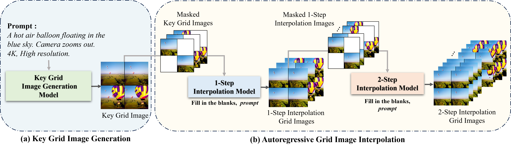

Abstract
Recent advances in the diffusion models have significantly improved text-to-image generation. However, generating videos from text is a more challenging task than generating images from text, due to the much larger dataset and higher computational cost required. Most existing video generation methods use either a 3D U-Net architecture that considers the temporal dimension or autoregressive generation. These methods require large datasets and are limited in terms of computational costs compared to text-to-image generation. To tackle these challenges, we propose a simple but effective novel grid diffusion for text-to-video generation without temporal dimension in architecture and a large text-video paired dataset. We can generate a high-quality video using a fixed amount of GPU memory regardless of the number of frames by representing the video as a grid image. Additionally, since our method reduces the dimensions of the video to the dimensions of the image, various image-based methods can be applied to videos, such as text-guided video manipulation from image manipulation. Our proposed method outperforms the existing methods in both quantitative and qualitative evaluations, demonstrating the suitability of our model for real-world video generation.
Method Overview

Overview of our approach. Our approach consists of two stages. In the first stage (a), our key grid image generation model generates a key grid image following input prompt. In the second stage (b), our model generates masked grid images by applying masking between each of the four frames and performs a 1-step interpolation using 'Fill in the blanks,' as a prefix with the prompt. Then, our model conducts a 2-step interpolation with the 2-step interpolation model, using the masked grid image from the 1-step interpolation images as input.


BibTeX
@inproceedings{lee2024grid,
title={Grid Diffusion Models for Text-to-Video Generation},
author={Lee, Taegyeong and Kwon, Soyeong and Kim, Taehwan},
booktitle={Proceedings of the IEEE/CVF Conference on Computer Vision and Pattern Recognition},
pages={8734--8743},
year={2024}
}
Acknowledgment
We thank Dong Gyu Lee for the help with human evaluation. This work was partly supported by Institute of Information \& communications Technology Planning \& Evaluation (IITP) grant funded by the Korea government (MSIT) (No.2022-0-00608, Artificial intelligence research about multi-modal interactions for empathetic conversations with humans, No.2021-0-02068, Artificial Intelligence Innovation Hub \& No.2020-0-01336, Artificial Intelligence Graduate School Program (UNIST)) and the National Research Foundation of Korea(NRF) grant funded by the Korea government(MSIT) (No. RS-2023-00219959).